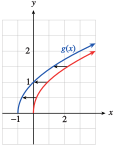
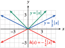

Section 2.3 Transformations of Graphs
Models for real situations are often variations of the basic functions introduced in Section 2.2. In this section, we explore how certain changes in the formula for a function affect its graph. In particular, we will compare the graph of \(y = f (x)\) with the graphs of
for different values of the constants \(k\text{,}\) \(h\text{,}\) and \(a\text{.}\) Such variations are called transformations of the graph.
Subsection Vertical Translations
The figure below shows the graphs of \(f(x) = x^2 + 4\text{,}\) \(g(x) = x^2 - 4\text{,}\) and the basic parabola, \(y = x^2\text{.}\) By comparing tables of values, we can see exactly how the graphs of \(f\) and \(g\) are related to the basic parabola.
| \(x\) | \(-2\) | \(-1\) | \(~0~\) | \(~~1~~\) | \(~2~\) |
| \(y=x^2\) | \(4\) | \(1\) | \(0\) | \(1\) | \(4\) |
| \(f(x)=x^2+4\) | \(8\) | \(5\) | \(4\) | \(5\) | \(8\) |
| \(x\) | \(-2\) | \(-1\) | \(0\) | \(1\) | \(2\) |
| \(y=x^2\) | \(4\) | \(1\) | \(0\) | \(1\) | \(4\) |
| \(g(x)=x^2-4\) | \(0\) | \(-3\) | \(-4\) | \(-3\) | \(0\) |
Each \(y\)-value in the table for \(f (x)\) is four units greater than the corresponding \(y\)-value for the basic parabola. Consequently, each point on the graph of \(f (x)\) is four units higher than the corresponding point on the basic parabola, as shown by the arrows. Similarly, each point on the graph of \(g(x)\) is four units lower than the corresponding point on the basic parabola.
The graphs of \(y = f (x)\) and \(y = g(x)\) are said to be translations of the graph of \(y = x^2\text{.}\) They are shifted to a different location in the plane but retain the same size and shape as the original graph. In general, we have the following principles.
Vertical Translations.
Compared with the graph of \(y = f (x)\text{,}\)
- The graph of \(~~y=f(x)+k,~~(k\gt 0)~~\) is shifted upward \(k\) units.
- The graph of \(~~y=f(x)-k,~~(k\gt 0~~)\) is shifted downward \(k\) units.
Example 2.39.
Graph the following functions.
- \(\displaystyle g(x) = \abs{x} + 3\)
- \(\displaystyle h(x) = \dfrac{1}{x}- 2\)
-
The table shows that the \(y\)-values for \(g(x)\) are each three units greater than the corresponding \(y\)-values for the absolute value function. The graph of \(g(x) = \abs{x} + 3\) is a translation of the basic graph of \(y = \abs{x}\text{,}\) shifted upward three units, as shown below.

\(x\) \(-2\) \(-1\) \(0\) \(1\) \(2\) \(y=\abs{x}\) \(2\) \(1\) \(0\) \(1\) \(2\) \(g(x)=\abs{x}+3\) \(5\) \(4\) \(3\) \(4\) \(5\) -
The table shows that the \(y\)-values for \(h(x)\) are each two units smaller than the corresponding \(y\)-values for \(y = \dfrac{1}{x}\text{.}\) The graph of \(h(x) = \dfrac{1}{x} - 2\) is a translation of the basic graph of \(y = \dfrac{1}{x}\text{,}\) shifted downward two units, as shown below.

\(x\) \(-2\) \(-1\) \(\dfrac{1}{2}\) \(1\) \(2\) \(y=\dfrac{1}{x}\) \(\dfrac{-1}{2}\) \(-1\) \(2\) \(1\) \(\dfrac{1}{2}\) \(h(x)=\dfrac{1}{x}-2\) \(\dfrac{-5}{2}\) \(-3\) \(0\) \(-1\) \(\dfrac{-3}{2}\)
Notebook 2.40. QuickCheck 1.
Notebook 2.41. Practice 1.

Example 2.42.
The function \(E = f (h)\) graphed at right gives the amount of electrical power, in megawatts, drawn by a community from its local power plant as a function of time during a 24-hour period in 2002. Sketch a graph of \(y = f (h) + 300\) and interpret its meaning.

The graph of \(y = f (h) + 300\) is a vertical translation of the graph of \(f\text{,}\) as shown at right. At each hour of the day, or for each value of \(h\text{,}\) the \(y\)-coordinate is 300 greater than on the graph of \(f\text{.}\) So at each hour, the community is drawing 300 megawatts more power than in 2002.

Notebook 2.43. Practice 2.
Subsection Horizontal Translations
Now consider the graphs of
shown below. Compared with the graph of the basic function \(y = x^2\text{,}\) the graph of \(f (x) = (x + 2)^2\) is shifted two units to the left, as shown by the arrows.

You can see why this happens by studying the function values in the table.
Locate a particular \(y\)-value for \(y = x^2\text{,}\) say, \(y = 4\text{.}\) You must move two units to the left in the table to find the same \(y\)-value for \(f (x)\text{,}\) as shown by the arrow. In fact, each \(y\)-value for \(f (x)\) occurs two units to the left when compared to the same \(y\)-value for \(y = x^2\text{.}\)


Similarly, the graph of \(g(x) = (x - 2)^2\) is shifted two units to the right compared to the graph of \(y = x^2\text{.}\) In the table for \(g\text{,}\) each \(y\)-value for \(g(x)\) occurs two units to the right of the same \(y\)-value for \(y = x^2\text{.}\) In general, we have the following principle.
Horizontal Translations.
Compared with the graph of \(y = f(x)\text{,}\)
- The graph of \(~~y = f(x + h),~ ~(h \gt 0)~~\) is shifted \(h\) units to the left.
- The graph of \(~~y = f(x - h),~ ~(h \gt 0)~~\) is shifted \(h\) units to the right.
Note 2.44.
At first, the direction of a horizontal translation may seem counterintuitive. Look again at the tables above to help you see how the shift occurs.
Example 2.45.
Graph the following functions.
- \(\displaystyle g(x) =\sqrt{x + 1}\)
- \(\displaystyle h(x) = \dfrac{1}{(x - 3)^2}\)
-
Consider the table of values for the function.
\(x\) \(-1\) \(0\) \(1\) \(2\) \(3\) \(y=\sqrt{x}\) undefined \(0\) \(1\) \(1.414\) \(1.732\) \(y=\sqrt{x+1}\) \(0\) \(1\) \(1.414\) \(1.732\) \(2\) The table shows that each \(y\)-value for \(g(x)\) occurs one unit to the left of the same \(y\)-value for the graph of \(y=\sqrt{x}\text{.}\) Consequently, each point on the graph of \(y = g(x)\) is shifted one unit to the left of \(y =\sqrt{x}\text{,}\) as shown at right.
 -
Consider the table of values for the function.
\(x\) \(-1\) \(0\) \(1\) \(2\) \(3\) \(4\) \(y=\dfrac{1}{x}\) \(1\) undefined \(1\) \(\dfrac{1}{4}\) \(\dfrac{1}{9}\) \(\dfrac{1}{16}\) \(y=\dfrac{1}{(x-3)^2}\) \(\dfrac{1}{16}\) \(\dfrac{1}{9}\) \(\dfrac{1}{4}\) \(1\) undefined \(1\) The table shows that each \(y\)-value for \(h(x)\) occurs three units to the right of the same \(y\)-value for the graph of \(y =\dfrac{1}{x^2}\text{.}\) Consequently, each point on the graph of \(y = h(x)\) is shifted three units to the right of \(y =\dfrac{1}{x^2}\text{,}\) as shown at right.

Notebook 2.46. QuickCheck 2.
Notebook 2.47. Practice 3.
Example 2.48.
The function \(N = f(p)\) graphed at right gives the number of people who have a given eye pressure level \(p\) from a sample of 100 people with healthy eyes, and the function \(g\) gives the number of people with pressure level \(p\) in a sample of 100 glaucoma patients.

- Write a formula for \(g\) as a transformation of \(f\text{.}\)
- For what pressure readings could a doctor be fairly certain that a patient has glaucoma?
- The graph of \(g\) is translated \(10\) units to the right of \(f\text{,}\) so \(g(p) = f (p - 10)\text{.}\)
- Pressure readings above \(40\) are a strong indication of glaucoma. Readings between \(10\) and \(40\) cannot conclusively distinguish healthy eyes from those with glaucoma.
Notebook 2.49. Practice 4.
Example 2.50.
Graph \(~~f(x) = (x + 4)^3 + 2\)
We identify the basic graph from the structure of the formula for \(f (x)\text{.}\) In this case, the basic graph is \(y = x^3\text{,}\) so we begin by locating a few points on that graph, say, \((0,0),~(1,1),\) and \((-1,-1).\)
We'll perform the translations separately, following the order of operations. First, we sketch a graph of \(y = (x + 4)^3\) by shifting each point on the basic graph four units to the left. We then move each point up two units to obtain the graph of \(f(x) = (x + 4)^3 + 2\text{.}\) All three graphs are shown below.
Notebook 2.51. Practice 5.
Notebook 2.52. Pause and Reflect.
Subsection Scale Factors
We have seen that adding a constant to the expression defining a function results in a translation of its graph. What happens if we multiply the expression by a constant? Consider the graphs of the functions
shown below, and compare each to the graph of \(y = x^2\text{.}\)

| \(x\) | \(y=x^2\) | \(f(x)=2x^2\) |
| \(-2\) | \(4\) | \(8\) |
| \(-1\) | \(1\) | \(2\) |
| \(0\) | \(0\) | \(0\) |
| \(1\) | \(1\) | \(2\) |
| \(2\) | \(4\) | \(8\) |
Compared to the graph of \(y = x^2\text{,}\) the graph of \(f (x) = 2x^2\) is expanded, or stretched, vertically by a factor of \(2\text{.}\) The \(y\)-coordinate of each point on the graph has been doubled, as you can see in the table of values, so each point on the graph of \(f\) is twice as far from the \(x\)-axis as its counterpart on the basic graph \(y = x^2\text{.}\)

| \(x\) | \(y=x^2\) | \(g(x)=\frac{1}{2}x^2\) |
| \(-2\) | \(4\) | \(2\) |
| \(-1\) | \(1\) | \(\frac{1}{2}\) |
| \(0\) | \(0\) | \(0\) |
| \(1\) | \(1\) | \(\frac{1}{2}\) |
| \(2\) | \(4\) | \(2\) |
The graph of \(g(x) = \dfrac{1}{2}x^2\) is compressed vertically by a factor of \(\dfrac{1}{2}\text{;}\) each point is half as far from the \(x\)-axis as its counterpart on the graph of \(y = x^2\text{.}\)
| \(x\) | \(y=x^2\) | \(h(x)=-x^2\) |
| \(-2\) | \(4\) | \(-4\) |
| \(-1\) | \(1\) | \(-1\) |
| \(0\) | \(0\) | \(0\) |
| \(1\) | \(1\) | \(-1\) |
| \(2\) | \(4\) | \(-4\) |
The graph of \(h(x) = -x^2\) is flipped, or reflected, about the \(x\)-axis; the \(y\)-coordinate of each point on the graph of \(y = x^2\) is replaced by its opposite.
In general, we have the following principles.
Scale Factors and Reflections.
Compared with the graph of \(y = f(x)\text{,}\) the graph of \(y = af(x)\text{,}\) where \(a \ne 0\text{,}\) is
- stretched vertically by a factor of \(\abs{a}\) if \(\abs{a}\gt 1\text{,}\)
- compressed vertically by a factor of \(\abs{a}\) if \(0\lt\abs{a}\lt 1\text{,}\) and
- reflected about the \(x\)-axis if \(a\lt 0\text{.}\)
The constant \(a\) is called the scale factor for the graph.
Notebook 2.53. QuickCheck 3.
Example 2.54.
Graph the following functions.
- \(\displaystyle g(x) = 3\sqrt[3]{x}\)
- \(\displaystyle h(x) =\dfrac{-1}{2}\abs{x}\)
-
The graph of \(g(x) = 3\sqrt[3]{x}\) is a vertical expansion of the basic graph \(y = \sqrt[3]{x}\) by a factor of \(3\text{,}\) as shown below . Each point on the basic graph has its \(y\)-coordinate tripled.

-
The graph of \(h(x) = \dfrac{-1}{2}\abs{x}\) is a vertical compression of the basic graph \(y = \abs{x}\) by a factor of \(\dfrac{1}{2}\text{,}\) combined with a reflection about the \(x\)-axis. You may find it helpful to graph the function in two steps, as shown below.

Notebook 2.55. Practice 6.

Notebook 2.56. QuickCheck 4.
Example 2.57.
The function \(A = f(t)\) graphed below gives a person's blood alcohol level \(t\) hours after drinking a martini. Sketch a graph of \(g(t) = 2f(t)\) and explain what it tells you.
To sketch a graph of \(g\text{,}\) we stretch the graph of \(f\) vertically by a factor of \(2\text{,}\) as shown below. At each time \(t\text{,}\) the person’s blood alcohol level is twice the value given by \(f\text{.}\) The function \(g\) could represent a person's blood alcohol level \(t\) hours after drinking two martinis.

Notebook 2.58. Practice 7.
Notebook 2.59. Pause and Reflect.
Subsection Section Summary
Subsubsection Vocabulary
Look up the definitions of new terms in the Glossary.
Transformation
Scale factor
Vertical stretch
Vertical compression
Horizontal translation
Subsubsection CONCEPTS
Vertical Translations.
Compared with the graph of \(y = f (x)\text{,}\)
The graph of \(y = f (x) + k ~~(k\gt 0)\) is shifted upward \(k\) units.
The graph of \(y = f (x) - k ~~(k\gt 0)\) is shifted downward \(k\) units.
Horizontal Translations.
Compared with the graph of \(y = f (x)\text{,}\)
The graph of \(y = f (x+h) ~~(h\gt 0)\) is shifted \(h\) units to the left.
The graph of \(y = f (x-h) ~~(h\gt 0)\) is shifted \(h\) units to the right.
Scale Factors and Reflections.
Compared with the graph of \(y = f (x)\text{,}\) the graph of \(y = a f (x)\text{,}\) where \(a\ne 0\text{,}\) is
stretched vertically by a factor of \(\abs{a} \) if \(\abs{a}\gt 1\text{,}\)
compressed vertically by a factor of \(\abs{a} \) if \(0\lt \abs{a}\lt 1\text{,}\) and
reflected about the \(x\)-axis if \(a\lt 0\text{.}\)
Subsubsection STUDY QUESTIONS
How does a vertical translation affect the formula for a function? Give an example.
How does a horizontal translation affect the formula for a function? Give an example.
How does a scale factor affect the formula for a function? Give an example.
How is the graph of \(y = -f (x)\) different from the graph of \(y = f (x)\text{?}\)
Subsubsection SKILLS
Practice each skill in the Homework problems listed.
Write formulas for transformations of functions: #1–6, 19–22, 35–38
Recognize and sketch translations of the basic graphs: #7–18
Recognize and sketch expansions, compression, and reflections of the basic graphs: #23–34, 43–50
Identify transformations from tables of values: #39–42
Sketch graphs obtained by two or more transformations of a basic graph: #51–62
Write a formula for a transformation of a graph: #63–76
Interpret transformations of graphs in context: #71–76
Exercises Homework 2.3
In Problems 1–6, identify the graph as a translation of a basic function, and write a formula for the graph.
1.

2.

3.

4.

5.

6.

For Problems 7–18,
Describe how to transform one of the basic graphs to obtain the graph of the given function.
Using guidepoints, sketch the basic graph and the graph of the given function on the same axes. Label the coordinates of three points on the graph of the given function.
7.
\(f(x)=\abs{x}-2 \)
8.
\(g(x)=(x+1)^3 \)
9.
\(g(s)=\sqrt[3]{s-4} \)
10.
\(f(s)=s^2+3 \)
11.
\(F(t)=\dfrac{1}{t^2}+1 \)
12.
\(G(t)=\sqrt{t-2} \)
13.
\(G(r)=(r+2)^3 \)
14.
\(F(r)=\dfrac{1}{r-4} \)
15.
\(H(d)=\sqrt{d}-3 \)
16.
\(h(d)=\sqrt[3]{d}+5 \)
17.
\(h(v)=\dfrac{1}{v+6} \)
18.
\(H(v)=\dfrac{1}{v^2}-2 \)
For Problems 19-22, identify the graph as a stretch, compression, or reflection of a basic function, and write a formula for the graph.
19.

20.

21.
22.

For Problems 23–32,
Identify the scale factor for each function and describe how it affects the graph of the corresponding basic function.
Using guidepoints, sketch the basic graph and the graph of the given function on the same axes. Label the coordinates of three points on the graph of the given function.
23.
\(f(x)=\dfrac{1}{3}\abs{x} \)
24.
\(H(x)=-3\abs{x} \)
25.
\(h(z)=\dfrac{-2}{z^2} \)
26.
\(g(z)=\dfrac{2}{z} \)
27.
\(G(v)=-3\sqrt{v} \)
28.
\(F(v)= -4\sqrt[3]{v} \)
29.
\(g(s)=\dfrac{-1}{2}s^3 \)
30.
\(f(s)=\dfrac{1}{8}s^3 \)
31.
\(H(x)=\dfrac{1}{3x} \)
32.
\(h(x)=\dfrac{-1}{4x^2} \)
In Problems 33 and 34, match each graph with its equation.
33.
\(\displaystyle f(x)=3\sqrt{x} \)
\(\displaystyle f(x)=2x^3 \)
\(\displaystyle f(x)=\dfrac{x}{3} \)
\(\displaystyle f(x)=\dfrac{3}{x} \)
\(\displaystyle f(x)=2\sqrt[3]{x} \)
\(\displaystyle f(x)=3x^2 \)
34.

\(\displaystyle f(x)=x^3-2 \)
\(\displaystyle f(x)=\sqrt[3]{x}+2 \)
\(\displaystyle f(x)=\dfrac{1}{(x-3)^2} \)
\(\displaystyle f(x)=\abs{x}-3 \)
\(\displaystyle f(x)=x^2+3 \)
\(\displaystyle f(x)=\sqrt{x-3} \)
In Problems 35–38, the graph of a function is shown. Describe each transformation of the graph; then give a formula for each in terms of the original function.
35.

36.

37.

38.

In Problems 39–42, each table in parts (a)–(d) describes a transformation of \(f (x)\text{.}\) Identify the transformation and write a formula for the new function in terms of \(f\text{.}\)
39.
| \(x\) | \(~~1~~\) | \(~~2~~\) | \(~~3~~\) | \(~~4~~\) | \(~~5~~\) | \(~~6~~\) |
| \(f(x)\) | \(8\) | \(6\) | \(4\) | \(2\) | \(0\) | \(2\) |
\(~~x~~\) \(~~1~~\) \(~~2~~\) \(~~3~~\) \(~~4~~\) \(~~5~~\) \(~~6~~\) \(y\) \(10\) \(8\) \(6\) \(4\) \(2\) \(4\) \(~~x~~\) \(~~1~~\) \(~~2~~\) \(~~3~~\) \(~~4~~\) \(~~5~~\) \(~~6~~\) \(y\) \(4\) \(2\) \(0\) \(-2\) \(-4\) \(-2\) \(~~x~~\) \(~~1~~\) \(~~2~~\) \(~~3~~\) \(~~4~~\) \(~~5~~\) \(~~6~~\) \(y\) \(4\) \(3\) \(2\) \(1\) \(0\) \(1\) \(~~x~~\) \(~~1~~\) \(~~2~~\) \(~~3~~\) \(~~4~~\) \(~~5~~\) \(~~6~~\) \(y\) \(10\) \(8\) \(6\) \(4\) \(2\) \(0\)
40.
| \(x\) | \(~-3~\) | \(~-2~\) | \(~-1~\) | \(~~0~~\) | \(~~1~~\) | \(~~2~~\) |
| \(f(x)\) | \(13\) | \(3\) | \(-3\) | \(-5\) | \(-3\) | \(3\) |
\(x\) \(~-3~\) \(~-2~\) \(~-1~\) \(~~0~~\) \(~~1~~\) \(~~2~~\) \(y\) \(-26\) \(-6\) \(6\) \(10\) \(6\) \(-6\) \(x\) \(~-3~\) \(~-2~\) \(~-1~\) \(~~0~~\) \(~~1~~\) \(~~2~~\) \(y\) \(18\) \(8\) \(2\) \(0\) \(2\) \(8\) \(x\) \(~-3~\) \(~-2~\) \(~-1~\) \(~~0~~\) \(~~1~~\) \(~~2~~\) \(y\) \(-3\) \(-5\) \(-3\) \(3\) \(13\) \(27\) \(x\) \(~-3~\) \(~-2~\) \(~-1~\) \(~~0~~\) \(~~1~~\) \(~~2~~\) \(y\) \(2.6\) \(0.6\) \(-0.6\) \(-1\) \(-0.6\) \(0.6\)
41.
| \(x\) | \(~-2~\) | \(~-1~\) | \(~~0~~\) | \(~~1~~\) | \(~~2~~\) | \(~~3~~\) |
| \(f(x)\) | \(-9\) | \(-8\) | \(-7\) | \(-6\) | \(1\) | \(20\) |
\(~~x~~\) \(~-2~\) \(~-1~\) \(~~0~~\) \(~~1~~\) \(~~2~~\) \(~~3~~\) \(y\) \(-34\) \(-9\) \(-8\) \(-7\) \(-6\) \(1\) \(~~x~~\) \(~-2~\) \(~-1~\) \(~~0~~\) \(~~1~~\) \(~~2~~\) \(~~3~~\) \(y\) \(-4\) \(21\) \(22\) \(23\) \(24\) \(31\) \(~~x~~\) \(~-2~\) \(~-1~\) \(~~0~~\) \(~~1~~\) \(~~2~~\) \(~~3~~\) \(y\) \(18\) \(16\) \(14\) \(12\) \(-2\) \(-40\) \(~~x~~\) \(~-2~\) \(~-1~\) \(~~0~~\) \(~~1~~\) \(~~2~~\) \(~~3~~\) \(y\) \(8\) \(6\) \(4\) \(2\) \(-12\) \(-50\)
42.
| \(x\) | \(~~1~~\) | \(~~2~~\) | \(~~3~~\) | \(~~4~~\) | \(~~5~~\) | \(~~6~~\) |
| \(f(x)\) | \(60\) | \(30\) | \(20\) | \(15\) | \(12\) | \(10\) |
\(x\) \(~~1~~\) \(~~2~~\) \(~~3~~\) \(~~4~~\) \(~~5~~\) \(~~6~~\) \(y\) \(30\) \(15\) \(10\) \(7.5\) \(6\) \(5\) \(x\) \(~~1~~\) \(~~2~~\) \(~~3~~\) \(~~4~~\) \(~~5~~\) \(~~6~~\) \(y\) \(35\) \(20\) \(15\) \(12.5\) \(11\) \(10\) \(x\) \(~~1~~\) \(~~2~~\) \(~~3~~\) \(~~4~~\) \(~~5~~\) \(~~6~~\) \(y\) \(-12\) \(-6\) \(-4\) \(-3\) \(-2.4\) \(-2\) \(x\) \(~~1~~\) \(~~2~~\) \(~~3~~\) \(~~4~~\) \(~~5~~\) \(~~6~~\) \(y\) \(-10\) \(-4\) \(-2\) \(-1\) \(1.4\) \(0\)
For Problems 43-50, write the function in the form \(y = kf(x)\text{,}\) where \(f (x)\) is one of the basic functions. Describe how the graph differs from that of the basic function.
43.
\(y=\dfrac{1}{2x^2} \)
44.
\(y=\sqrt{9x} \)
45.
\(y=\sqrt[3]{8x} \)
46.
\(y=\dfrac{1}{4x} \)
47.
\(y=\abs{3x} \)
48.
\(y=\left(\dfrac{x}{2}\right)^2 \)
49.
\(y=\left(\dfrac{x}{2}\right)^3 \)
50.
\(y=\abs{\dfrac{x}{5}} \)
For Problems 51–62,
The graph of each function can be obtained from one of the basic graphs by two or more transformations. Describe the transformations.
Sketch the basic graph and the graph of the given function by hand on the same axes. Label the coordinates of three points on the graph of the given function.
51.
\(f(x)=2+(x-3)^2 \)
52.
\(f(x)=(x+4)^2+1 \)
53.
\(g(z)=\dfrac{1}{z+2}-3 \)
54.
\(g(z)=\dfrac{1}{z-1}+1\)
55.
\(F(u)=-3\sqrt{u+4}+4 \)
56.
\(F(u)=4\sqrt{u-3}-5 \)
57.
\(G(t)=2\abs{t-5}-1 \)
58.
\(G(t)=2-\abs{t+4} \)
59.
\(H(w)=6-\dfrac{2}{(w-1)^2} \)
60.
\(H(w)=\dfrac{3}{(w+2)^2}-1 \)
61.
\(f(t)=\sqrt[3]{t-8}-1 \)
62.
\(f(t)=\sqrt[3]{t+1}+8 \)
In Problems 63 and 64, each graph can be obtained by two transformations of the given graph. Describe the transformations and write a formula for the new graph in terms of f.
63.

64.
For Problems 65–70,
Describe the graph as a transformation of a basic function.
Give an equation for the function shown.
65.

66.

67.

68.

69.
70.

71.
The graph of \(f (x)\) shows the number of students in Professor Hilbert's class who scored \(x\) points on a quiz. Write a formula for each transformation of \(f\) ((a) and (b) of the figure below); then explain how the quiz results in that class compare to the results in Professor Hilbert's class.

72.
The graph of \(f(x)\) shows the number of men at Tyler College who are \(x\) inches tall. Write a formula for each transformation of \(f\) ; then explain how the heights in that population compare to the Tyler College men.


73.
The graph of \(f (x)\) shows the California state income tax rate, in percent, for a single taxpayer whose annual taxable income is \(x\) dollars. Write a formula for each transformation of \(f\text{;}\) then explain what it tells you about the income tax scheme in that state.


74.
The graph of \(f (w)\) shows the shipping rate at SendIt for a package that weighs \(w\) pounds. Write a formula for each transformation of \(f\) and explain how the shipping rates compare to the rates at SendIt.


75.
The graph of \(g(t)\) shows the population of marmots in a national park \(t\) months after January 1. Write a formula for each transformation of \(g\) and explain how the population of that species compares to the population of marmots.


76.
The graph of \(f (x)\) is a dose-response curve. It shows the intensity of the response to a drug as a function of the dosage \(x\) milligrams administered. The intensity is given as a percentage of the maximum response. Write a formula for each transformation of \(f\) and explain what it tells you about the response to that drug